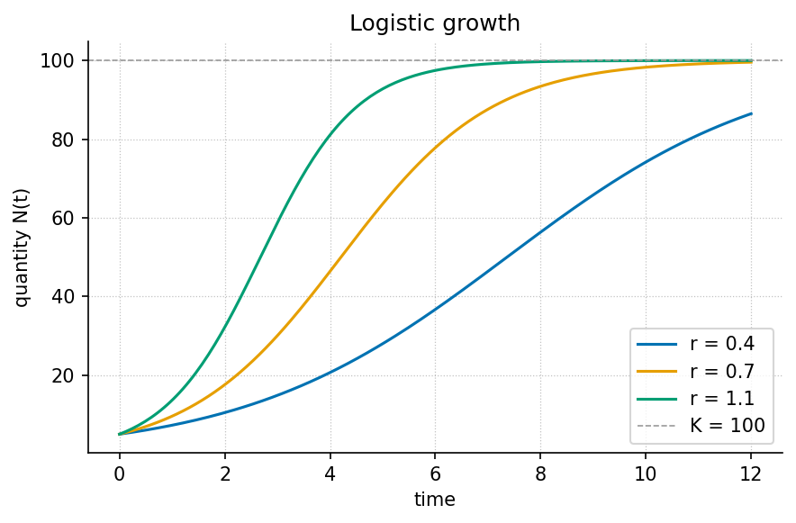

First Principles

visualization.plots.plot_logistic_growth.Level 1/3 · 25 min read · 40 min lecture · Prerequisites: none
This chapter is a worked reference. It is filled to completion to show what a finished chapter looks like. The other chapters in this template ship as structurally-complete stubs (marked with stub comments and TODO notes); fill them the same way.
Learning Objectives
By the end of this chapter you should be able to:
- Explain what it means to model a system as a small set of state variables and a rule for how they change.
- Distinguish a parameter from a variable, and identify each in a worked model.
- Derive and interpret the logistic growth law and predict its long-run behaviour toward an equilibrium.
- Compute model values with the tested function
textbook.models.logistic_growthrather than re-deriving arithmetic by hand.
Study Blueprint
- Big idea: A great deal of change in the world is captured by a handful of variables and a single rule relating their rates — the first principle of quantitative modelling.
- Core concepts: system, state, parameter, equilibrium.
- Quantitative lens: the logistic law in [eq:part_I_first_principles_model].
- Data skill: read an S-curve and estimate its carrying capacity by eye, then confirm numerically.
- Common misconception to repair: “exponential” and “logistic” are not the same — unbounded growth is an early-time approximation, not the rule.
- Primary lab: [sec:lab_part_I_first_principles].
- Question bank: [sec:q_part_I_first_principles].
- Bridge to computation:
textbook.models.logistic_growth.
Opening Vignette: Counting before you explain.
A population biologist watches a colony double, then double again, then — unexpectedly — slow. A start-up tracks users that grow the same way before the market saturates. A chemist measures a reaction that races, then crawls as substrate runs low. Three unrelated fields, one shape. The job of a first model is not to capture everything; it is to capture that shape with as few moving parts as possible.
From a system to a model
A model is a deliberate simplification. We choose a small number of state variables — here, a single quantity \(N(t)\) — and write a rule for how the state changes. The art is leaving things out: a first model that fits on one line teaches more than a faithful one that fills a page.
The variables are what change; the parameters are what we hold fixed while we reason. In the growth model below, \(N\) is the variable, while the rate \(r\) and the carrying capacity \(K\) are parameters. Confusing the two is the most common beginner error: if you find yourself “solving for \(K\) over time,” you have mislabelled a parameter as a variable.
A first quantitative law
Unbounded (exponential) growth assumes nothing ever pushes back. Real systems saturate. The simplest law that grows fast when small and levels off when large is the logistic equation, written as a rate of change in [eq:part_I_first_principles_rate] and in closed form in [eq:part_I_first_principles_model]:
\[ \frac{dN}{dt} = rN\left(1 - \frac{N}{K}\right) \] {#eq:part_I_first_principles_rate}
\[ N(t) = \frac{K}{1 + \left(\dfrac{K - N_0}{N_0}\right) e^{-rt}} \] {#eq:part_I_first_principles_model}
Read [eq:part_I_first_principles_rate] aloud: the rate of change is proportional to how much there is (\(rN\)) times how much room remains (\(1 - N/K\)). When \(N\) is small the second factor is near \(1\) and growth is nearly exponential; as \(N\) approaches \(K\) the factor approaches \(0\) and growth stalls. The parameters are collected in [tbl:part_I_first_principles_parameters].
| Symbol | Name | Role | Example value |
|---|---|---|---|
| \(N(t)\) | quantity | variable | computed |
| \(r\) | intrinsic rate | parameter | \(0.8\ \mathrm{s^{-1}}\) |
| \(K\) | carrying capacity | parameter | \(100\) units |
| \(N_0\) | initial value | parameter | \(5\) units |
Worked example
Take \(r = 0.8\), \(K = 100\), and \(N_0 = 5\). Rather than evaluate the exponential by hand, call the tested backbone:
import numpy as np
from textbook import models
t = np.array([0.0, 2.0, 5.0, 10.0])
N = models.logistic_growth(t, r=0.8, carrying_capacity=100.0, initial=5.0)
# N -> [ 5.00, 20.68, 74.18, 99.37 ]The trajectory starts at \(N(0) = 5.00\), reaches \(N(2) = 20.68\), passes the steep middle near \(t = 5\) with \(N(5) = 74.18\), and by \(t = 10\) has all but arrived at \(N(10) = 99.37\) — within one part in a hundred of the carrying capacity. This is the S-curve plotted in [fig:part_I_first_principles]: an early near-exponential rise, an inflection, and a long approach to the asymptote.
The long-run behaviour is exact, not approximate. Because \(r > 0\), the term \(e^{-rt} \to 0\), so \(N(t) \to K\). The proof is one line and is recorded as Theorem 1 in [sec:appendix_formalisms]; the same fact is asserted numerically by the test suite, so the prose and the code cannot silently disagree.
How the pieces connect
graph TD
A[Choose state variables] --> B[Write a rate rule]
B --> C[Solve or simulate]
C --> D[Predict long-run behaviour]
D -->|compare to data| AThis loop — choose, write, solve, predict, compare — is the first principle the rest of the book elaborates. Foundational treatments of model-building include [brown2017principles] and [patel2018models].
Summary
A model trades completeness for clarity: a few state variables and one rule. The
logistic law adds a single idea — finite room — to exponential growth,
and that idea changes the long-run behaviour from unbounded increase to
a stable equilibrium at
the carrying capacity \(K\). Compute
with the tested logistic_growth function so your worked
numbers are reproducible and correct by construction.
Key Terms
system, model, state, parameter, equilibrium.
Further Reading
- @brown2017principles — a readable introduction to reasoning from first principles; start with its opening chapter on what a model is for.
- @patel2018models — a broader survey of model families; use it to see where the logistic law sits among alternatives.
Practice
- Lab: [sec:lab_part_I_first_principles] — measure an S-curve and estimate its parameters.
- Question bank: [sec:q_part_I_first_principles] — recall through synthesis.